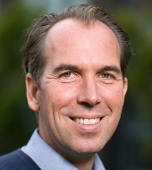
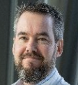
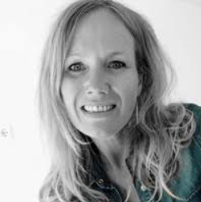
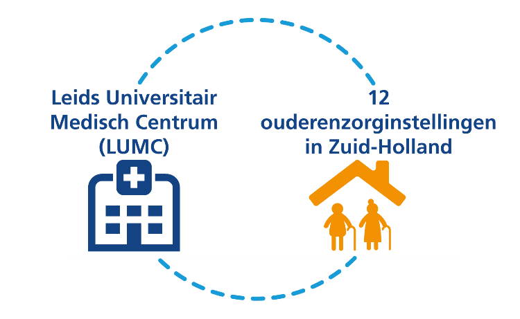

De samenwerking tussen huisartsen en specialisten ouderengeneeskunde in de wijk neemt toe, zowel kwantitatief als kwalitatief. Niets is dan logischer om dit tijdens de opleiding tot SO of huisarts al te laten starten. In 2020 is gestart met het schrijven van een projectopdracht om het interprofessioneel leren van aiossen huisartsgeneeskunde en specialisten ouderengeneeskunde vorm te geven. Sowieso is het voor de huisartsopleiding een enorme kans om samen te werken met de SOOL. Zo willen wij in onze communicatie naar buiten toe ons meer gaan profileren als opleiding waar in Leiden ouderenzorg en in Den Haag populatiegerichte zorg speerpunten zijn. Dit pas ook mooi bij de differentiaties Ouderenzorg en Beleid&Beheer, die aios huisartsgeneeskunde vanuit het hele land hier kunnen doen.
Samenwerken door samen scholen
prof. dr. Jacobijn Gussekloo, huisarts
De effecten van het toenemende aantal ouderen op medische en langdurende zorg, pensioenen, huisvesting voor ouderen en bijvoorbeeld de decentrale financiering van zorg en welzijn zijn grote maatschappelijke uitdagingen. Binnen de medische zorg spelen niet alleen discussies over de organisatie en financiering. Juist hier spelen ook de maatschappelijke discussies over de waarde van de derde levensfase, over waarde-gedreven zorg, en bijvoorbeeld over voltooid leven.
De medische en maatschappelijke uitdagingen rondom de toename van de ouderen bevinden zich op grensvlakken van kennisdomeinen. Daarom is samenwerking tussen professionals van verschillende disciplines en kennisdomeinen nodig. Pas dan ontstaat voldoende oplossend vermogen binnen dit nieuwe brede vakgebied over ouderen, ouderengeneeskunde en ouderenzorg.
Deze oplossingsrichting vraagt om professionals die goed zijn in hun eigen vak én expert zijn in interprofessioneel en interdisciplinair samenwerken. Het opleiden van deze moderne professionals vraagt om vernieuwing van het onderwijs. Een belangrijk Leids motto is hierbij ‘samenwerken door samen scholen’. Dit is nieuw, spannend en uitdagend.
Binnen LUMC-opleidingen over ouderen, ouderengeneeskunde en ouderenzorg wordt dit motto al volop omarmt. Specialisten ouderengeneeskunde en huisartsen scholen samen in de kaderopleiding Eerstelijns Ouderengeneeskunde. In deze 2-jarige opleiding leren deze professionals vooral om samen te werken in de eerstelijns ouderengeneeskunde. Dit levert inspiratie, spannende discussies en juist ook nieuwe samenwerkingsvormen. De interdisciplinaire nascholing tijdens de Leidse Ouderengeneeskunde Dagen biedt eenzelfde bijzondere ervaring. Ook de huisartsopleiding en de opleiding tot specialist ouderengeneeskunde zijn volop in beweging om deze nieuwe leervormen in te voeren.
Naast medische professionals zijn ook andere professionals nodig om te werken aan deze belangrijke maatschappelijke vraagstukken rondom veroudering. Met de eenjarige master Vitality and Ageing leidt het LUMC academische professionals op om te werken aan een betere zorg en leven voor ouderen. Door samen te scholen leert deze interdisciplinaire en internationale groep masterstudenten om samen te werken op dit belangrijke thema.
Omdat samen scholen leidt tot samenwerken, zullen de LUMC opleidingen rondom ouderen, ouderengeneeskunde en ouderenzorg nog meer gaan samenwerken. Dit is essentieel om professionals op te kunnen leiden die bijdragen aan de toekomstige maatschappelijke uitdagingen rondom veroudering. Kortom, het wordt een spannende én interdisciplinaire tijd!
Leiden: Silicon Valley van de ouderenzorg

prof. dr. David van Bodegom, Leyden Academy on Vitality and Ageing
In Leiden is een lange traditie van onderzoek en opleiden binnen de ouderenzorg. Wij leiden basisartsen op met een brede blik, die allemaal een coschap ouderengeneeskunde hebben gehad. Wie geïnteresseerd raakt kan zich bij de master Vitality and Ageing nog een jaar lang extra verdiepen en bekwamen in de ouderenzorg. Ook de vervolgopleidingen zijn goed vertegenwoordigd: specialisten ouderengeneeskunde, maar ook kader-huisartsen ouderengeneeskunde en internisten met de specialisatie ouderengeneeskunde.
Er is voor beleidsmakers op een kwartiertje treinen van het LUMC de opleiding Population health management op de LUMC Campus in Den haag waar ouderen een van de drie doelgroepen zijn. Tenslotte is er voor bestuurders in de ouderenzorg de Executive leergang van Leyden Academy on Vitality and Ageing. Zo is er voor iedereen, van student tot directeur de mogelijkheid om in Leiden nog beter te worden in de ouderenzorg.
Hoe verbinden we al deze partijen? In het onderwijs is er veel samenwerking. Waren er vroeger drie afzonderlijke nascholingen, nu zijn er de jaarlijkse ‘Leidse Ouderengeneeskunde Dagen’, een van de meest succesvolle Boerhaave cursussen waar huisartsen, specialisten ouderengeneeskunde, en internisten samenkomen om te spreken over ouderengeneeskunde.
Eenzelfde samenwerking wordt nu ook in het onderzoek verder uitgebouwd. In het nieuwe thema Lifecourse wordt vanuit een levensloop perspectief naar veroudering gekeken. Tijdens de levensloop zijn er vroege invloeden die de manier van veroudering beïnvloeden. Maar ook later in het leven doorlopen mensen verschillende fasen en zijn er verschillende professionals die hen in elke fase bijstaan. Aan het begin staan de vitale thuiswonende ouderen in de wijk. Hoe houden we hen langer vitaal? Hier doen onderzoekers vanuit public health en vitaliteit onderzoek. Als de thuiswonende ouderen ziek worden komen ze bij de huisarts. Wat is dan passende zorg? De afdeling huisartsgeneeskunde heeft veel sterke ouderenonderzoekers. Af en toe is voor ouderen ook specialistische zorg nodig, en daarom zijn ook de internisten verenigd in het verouderingsonderzoek in het thema Lifecourse. En tenslotte komen veel ouderen aan het eind van hun leven in het verpleeghuis. Ook hier is in Leiden veel onderzoek naar de zorg in deze laatste fase.
Al deze onderzoekers werken samen, ook met de opleidingen en maken van Leiden de plek voor de ouderenzorg, wij zijn daarom met recht het Silicon valley van de ouderengeneeskunde.
2020, het jaar met twee gezichten

dr. Simon Mooijaart,, internist-ouderengeneeskunde LUMC
Terugkijken op 2020 is voor weinig mensen een hobby. Thuis konden veel feestjes niet gevierd worden, vrienden en familie niet ontmoet, kinderen niet naar school en hadden we te maken met ziekte van onszelf en van dierbaren. Ook op het werk was (en is) er een continue afwisseling van opschaling en afschaling van COVID-zorg, en van onderwijs en onderzoek. En dat maakte dat alle automatismen – en daarmee een flinke bak energie – verdwenen. Het ziekenhuis onderging binnen enkele maanden reorganisaties die normaal jaren in beslag nemen. Maar – misschien wel bovenal – wat hebben onze patiënten en hun naasten te lijden gehad. COVID-19 heeft vooral slachtoffers gemaakt onder ouderen: 90% van alle sterfte betrof mensen van 70 jaar of ouder. En vergeet niet de enorme impact van isolatie, delier en functionele achteruitgang: thuis, in verpleeghuis en ziekenhuis was dat niet anders.
Maar terwijl de vaccinatie-campagne op stoom begint te komen en COVID-19 in het verpleeghuis bijna weg lijkt breekt de lente op meerdere gebieden aan. En ook ruimte in ons hoofd om te zien dat er het afgelopen jaar ook mooie dingen zijn gebeurd. In het ziekenhuis is duidelijk meer aandacht gekomen voor het begrip “kwetsbaarheid” bij de oudere patiënt, in no time is dat in onze werkwijzen terecht gekomen. En er werden grote stappen gezet in de regionale samenwerking m.b.t. bijvoorbeeld behoefte aan Geriatrische Revalidatie Zorg voor de vaak oudere (maar niet altijd!) COVID-19 patiënt. En in het kader van “never spoil a good crisis” zijn er mooie onderzoeken opgezet over ouderen met COVID-19 waarvan het belang ver voorbij die van COVID-19 gaan en vaak ook met een transmuraal karakter.
In maart 2020 startten we in het LUMC in samenwerking met Topaz, Marente en Activite de “Kort Opname en Herstel Afdeling”. En afdeling waar ouderen worden opgenomen en waar vanaf de drempel van de SEH wordt gewerkt aan herstel. Naast de behandeling van de acute ziekte wordt direct een behandelplan gemaakt ook voor het geestelijke en lichamelijk herstel. En dit ook vanaf dag 1 samen met specialist ouderengeneeskunde en wijkverpleging. Samen over de muren van de instellingen kijken waar de patiënt het beste af is en wat daarvoor geregeld moet worden. Helaas moest de Korte Opname en Herstel Afdeling in 2020 na 10 dagen alweer dicht vanwege de COVID-19 maatregelen en we wachten nog altijd op heropening. Maar juist met de ervaring van het afgelopen jaar kan het niet anders dan dat de afdeling in 2021 alsnog een groot succes gaat worden! Op naar meer samenwerking!
Het universitair Netwerk voor de Care sector Zuid-Holland (UNC-ZH)

Eveline Korving
Bij de opleiding Specialisme Ouderengeneeskunde in Leiden kun je je opleiding combineren met het doen van wetenschappelijk onderzoek. Hierin ligt een belangrijke samenwerking voor SOOL met het UNC-ZH. Veel van deze onderzoeken worden uitgevoerd in het UNC-ZH: artsen in opleiding tot onderzoeker (aioto’s) doen hun onderzoek in de organisaties uit het netwerk.

Voorbeelden van onderzoek
Verschillende artsen in opleiding volgen dit aioto-traject en doen hun onderzoek in ons netwerk. Daarbij krijgen zij ook onderzoeksbegeleiding vanuit de staf van het netwerk. Bekijk bijvoorbeeld de onderzoeken die in 2020 ook liepen:
2020: Corona-onderzoeken in de ouderenzorg
De ouderenzorg werd hard getroffen door het coronavirus in 2020. Onderzoeken in de praktijk stonden in eerste instantie stil, daarna werd gekeken wat er wel mogelijk was. Een aantal studies zaten in de fase van literatuuronderzoek of analyse, die door konden lopen. De aioto’s liepen daardoor weinig tot geen vertraging op.
2020 was ook een jaar van de kracht van samenwerking in ons netwerk: in sneltreinvaart werden belangrijke onderzoeken opgezet om informatie over het coronavirus te vergaren. Landelijke samenwerking met de andere vijf academische netwerken ouderenzorg hebben gezorgd voor brede deelname van zorgorganisaties. Informatie uit het Corona-onderzoek Verpleeghuizen gaat rechtstreeks naar het Ministerie van Volksgezondheid, Welzijn en Sport en naar beleid in de organisaties. Lees hier meer over onze corona-onderzoeken. Op de kennispagina Coronavirus en ouderenzorg houden we actuele internationale kennis bij. Bekijk hier.
Kennisontwikkeling in de ouderenzorg
Ook masterstudenten Vitality & Ageing van het LUMC doen onderzoek in het UNC-ZH. De opleidingen en het netwerk bieden samen een mooi platform voor kennisontwikkeling in de ouderenzorg. Om nog meer uitwisseling met het onderwijs te bewerkstelligen zijn we een samenwerkingsverband aangegaan met Vitale Delta (4 hogescholen) en met Hogeschool Utrecht (op geriatrische revalidatie). Met de opleiding fysiotherapie vond in 2020 een goede samenwerking plaats voor studenten van de Hogeschool Leiden, dat een duurzaam vervolg krijgt.
Een sterke samenwerking in de ouderenzorg
Het UNC-ZH bestaat sinds 2005. Dit netwerk is een samenwerkingsverband tussen de afdeling Public Health en Eerstelijnsgeneeskunde (PHEG) van het Leids Universitair Medisch Centrum (LUMC) en twaalf grote zorgorganisaties in Zuid-Holland. Alle deelnemers van het netwerk zetten zich in voor wetenschappelijk onderzoek om zo de ouderenzorg te kunnen verbeteren. Er zijn nog vijf academische netwerken in ouderenzorg, hiermee is continue samenwerking en kennisuitwisseling op verschillende niveaus en thema’s..
Speerpunten van onderzoek
De speerpunten van onderzoek binnen ons netwerk zijn: geriatrische revalidatie, kwaliteit van leven bij dementie en palliatieve zorg bij dementie. Overkoepelend hebben we het thema cliëntparticipatie. Door het gezamenlijk uitvoeren van wetenschappelijk onderzoek op deze speerpunten vindt structurele verbinding plaats tussen wetenschap en praktijk. De onderzoeken sluiten zoveel mogelijk aan bij de wensen en behoeften van verpleeghuisbewoners, door hen zelf en cliëntenraden actief te betrekken. Binnen onze speerpunten lopen verschillende onderzoeken die te vinden zijn op onze website
De verbinding met AGE
De thema’s van het UNC-ZH sluiten binnen het LUMC aan bij de Academische werkplaats voor Geriatrie in de Eerstelijn en langdurige Zorg (AGE). Deze werkplaats voor geriatrie is onderdeel van de afdeling Public Health en Eerstelijnsgeneeskunde (PHEG) van het LUMC. Het doel van het onderzoeksprogramma van AGE is het verbeteren van (de organisatie) van medische zorg aan ouderen, gebaseerd op wetenschappelijke kennis en evidentie. Het UNC-ZH draagt hieraan bij door de zorgpraktijk, het onderzoek en onderwijs en nascholing zo veel mogelijk te integreren.
Motor tot verbinding
Het LUMC heeft in de ouderenzorg o.a. als missie om zorg, onderzoek en onderwijs/opleiding en nascholing te verbinden. De afdeling PHEG heeft het voordeel dat voor de huisarts- en specialist ouderengeneeskunde onderzoek, opleiding, nascholing en onderwijs heel dicht bij elkaar is georganiseerd. Daarnaast zijn zowel de landelijke NHG-kaderopleiding ouderenzorg voor huisartsen en de landelijke kaderopleiding specialist ouderengeneeskunde in de eerste lijn beide aan de afdeling PHEG verbonden. Deze kaderopleidingen hebben een uitstekende samenwerking, zo zijn er bijvoorbeeld regelmatig gezamenlijke terugkomdagen.